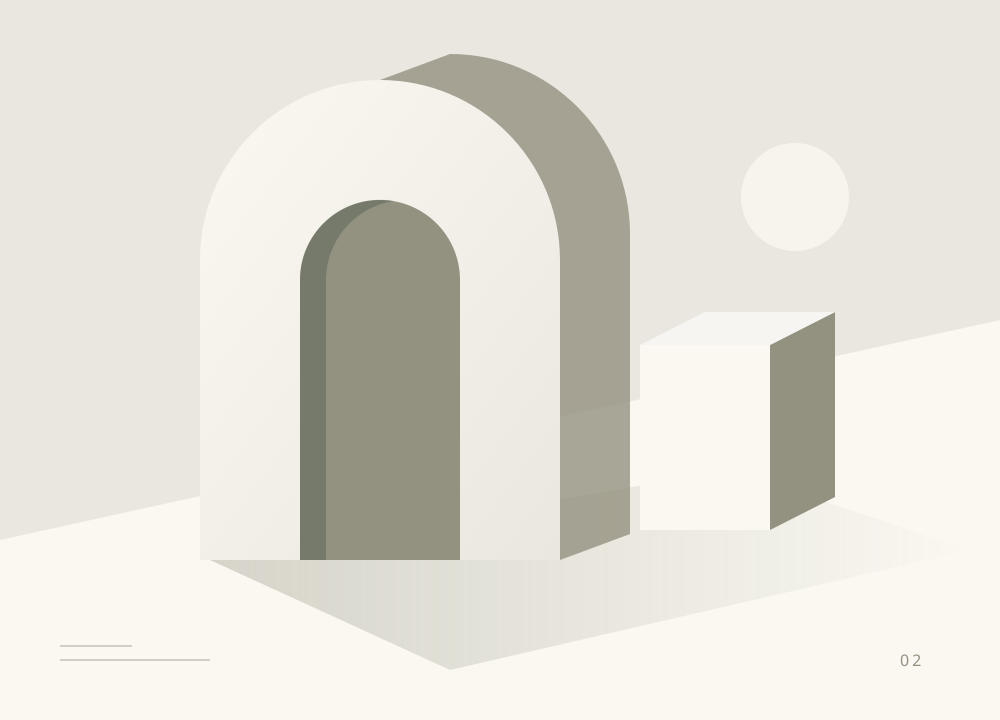
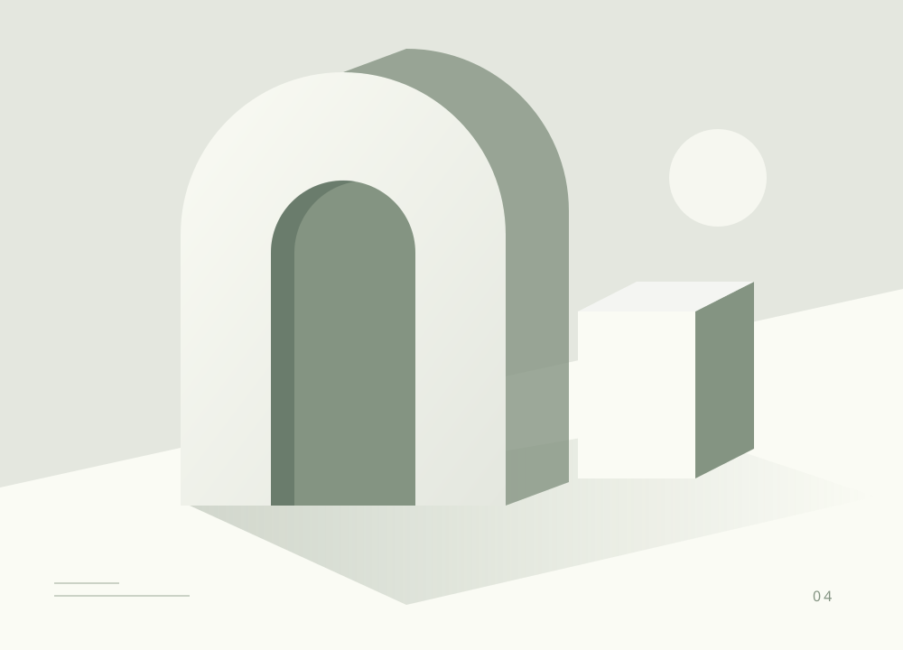

ДИЗАЙНМеньше интерфейса, больше смысла
Почему хороший продукт начинается не с новых функций, а с правильных вопросов.
О дизайне, технологиях и практике. Для тех,
кто любит разбираться в деталях.

Убираем лишнее, выстраиваем связи и создаём среду, в которой идеям проще расти.

ДИЗАЙНПочему хороший продукт начинается не с новых функций, а с правильных вопросов.
 РАЗРАБОТКА
РАЗРАБОТКАОт первого черновика до публикации: сохраняем контекст каждого решения.

ПРАКТИКАНебольшие привычки и понятные системы для большой творческой работы.